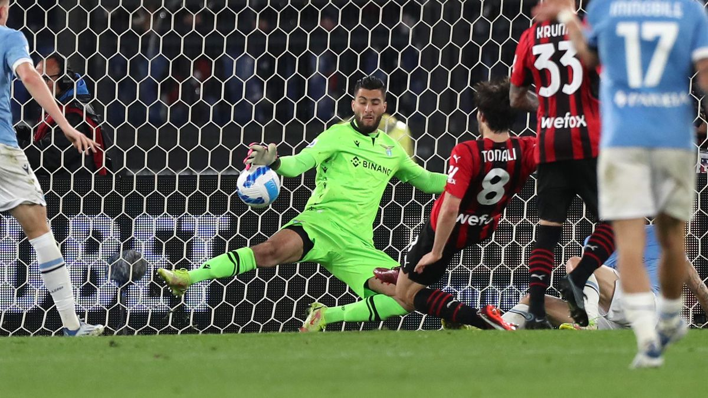

TALENTI SPRECATI NEL CALCIO

Il calcio è uno sport molto semplice e altrettanto conosciuto, bisogna fare goal facendo entrare la palla in porta e per vincere bisogna avere più goal degli avversari.
Ci sono molti calciatori riconosciuti per essere dei campioni che offrono spettacolo e fanno vincere la propria squadra, a volte caricandosela anche sulle spalle.
Ci sono però anche dei talenti sprecati, ovvero quegli atleti per cui si nutriva una grande aspettativa ma che, per varie ragioni, non l’hanno rispettata. Capita spesso che questi calciatori vengano pagati tanti soldi dalle società sportive, e quando non seguono la strada che si pensava potessero intraprendere vengono etichettati come “scarsi” o “falliti”.
In questo breve sito, voglio illustrare i calciatori che secondo me hanno maggiormente deluso le aspettative dei tifosi, degli allenatori e dei dirigenti della Seria A. In particolare prenderò come spunto due calciatori che hanno giocato al Milan, ovvero la mia squadra del cuore.